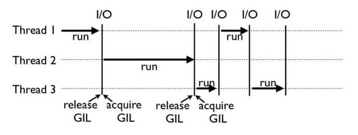

原文出处:本文由博客园博主秋官提供。
原文连接:https://www.cnblogs.com/xiaoguanqiu/p/11203556.html
原文连接:https://www.cnblogs.com/xiaoguanqiu/p/11203556.html
一个不解之谜
一段代码
def CountDown(n):
while n > 0:
n -= 1
# CountDown(100000000)
#==8秒
from threading import Thread
n = 100000000
t1 = Thread(target=CountDown, args=[n // 2])
t2 = Thread(target=CountDown, args=[n // 2])
t1.start()
t2.start()
t1.join()
t2.join()
#==9s 可以看出，多线程并没有让上面代码变得更快，这是Python的问题？
Python的线程，的的确确封装了底层操作系统线程。在Linux系统里是Pthread（全称为POSIXThread），而在Windows系统里是WindowsThread。
为什么有GIL
GIL，是最流行的 Python 解释器 CPython 中的一个技术术语。它的意思是全局解释器锁，本质上是类似操作系统的 Mutex。每一个 Python 线程，在 CPython 解释器中执行时，都会先锁住自己的线程，阻止别的线程执行。CPython 会做一些小把戏，轮流执行 Python 线程。
所以说，CPython 引进 GIL 其实主要就是这么两个原因：
一是设计者为了规避类似于内存管理这样的复杂的竞争风险问题（race condition）；
二是因为 CPython 大量使用 C 语言库，但大部分 C 语言库都不是原生线程安全的（线程安全会降低性能和增加复杂度）。
GIL 是如何工作的？
如图,Thread 1、2、3 轮流执行，每一个线程在开始执行时，都会锁住 GIL，以阻止别的线程执行；同样的，每一个线程执行完一段后，会释放 GIL，以允许别的线程开始利用资源。


CPython还有check interval机制。早期的 Python 是 100 个 ticks，大致对应了 1000 个 bytecodes；而 Python 3 以后，interval 是 15 毫秒。
for (;;) {
if (--ticker < 0) {
ticker = check_interval;
/* Give another thread a chance */
PyThread_release_lock(interpreter_lock);
/* Other threads may run now */
PyThread_acquire_lock(interpreter_lock, 1);
}
bytecode = *next_instr++;
switch (bytecode) {
/* execute the next instruction ... */
}
} 从这段代码中，我们可以看到，每个 Python 线程都会先检查 ticker 计数。只有在 ticker 大于 0 的情况下，线程才会去执行自己的 bytecode。
Python 的线程安全
GIL 的设计，主要是为了方便 CPython 解释器层面的编写者，而不是 Python 应用层面的程序员。
作为 Python 的使用者，我们还是需要 lock 等工具，来确保线程安全。比如下面的这个例子：
n = 0
lock = threading.Lock()
def foo():
global n
with lock:
n += 1如何绕过 GIL？
事实上，很多高性能应用场景都已经有大量的 C 实现的 Python 库，例如 NumPy 的矩阵运算，就都是通过 C 来实现的，并不受 GIL 影响。 所以，大部分应用情况下，你并不需要过多考虑 GIL。因为如果多线程计算成为性能瓶颈，往往已经有 Python 库来解决这个问题了。
总的来说，绕过 GIL 的大致思路有这么两种就够了：
1. 绕过 CPython，使用 JPython（Java 实现的 Python 解释器）等别的实现；
2. 把关键性能代码，放到别的语言（一般是 C++）中实现。
参考
极客时间《Python核心技术实战》专栏